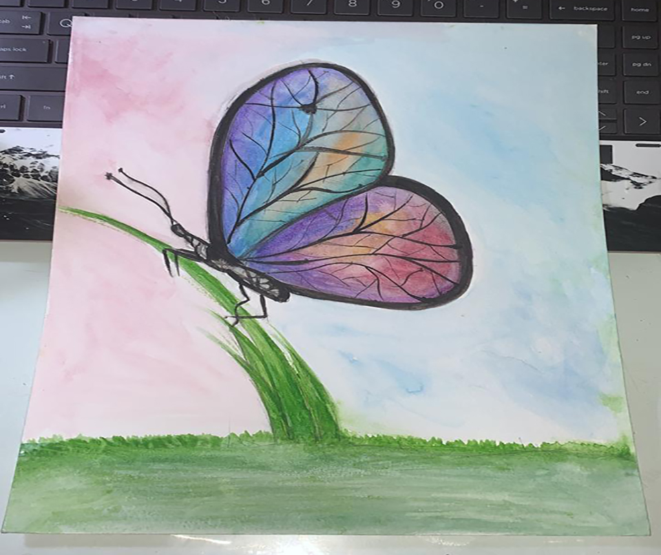
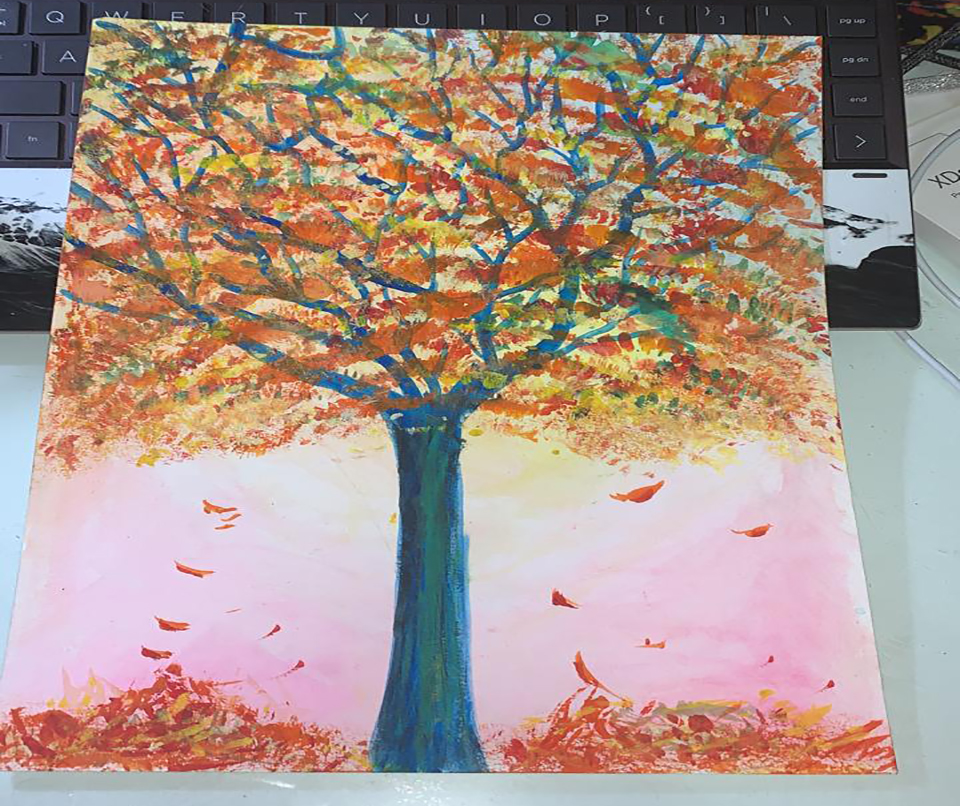
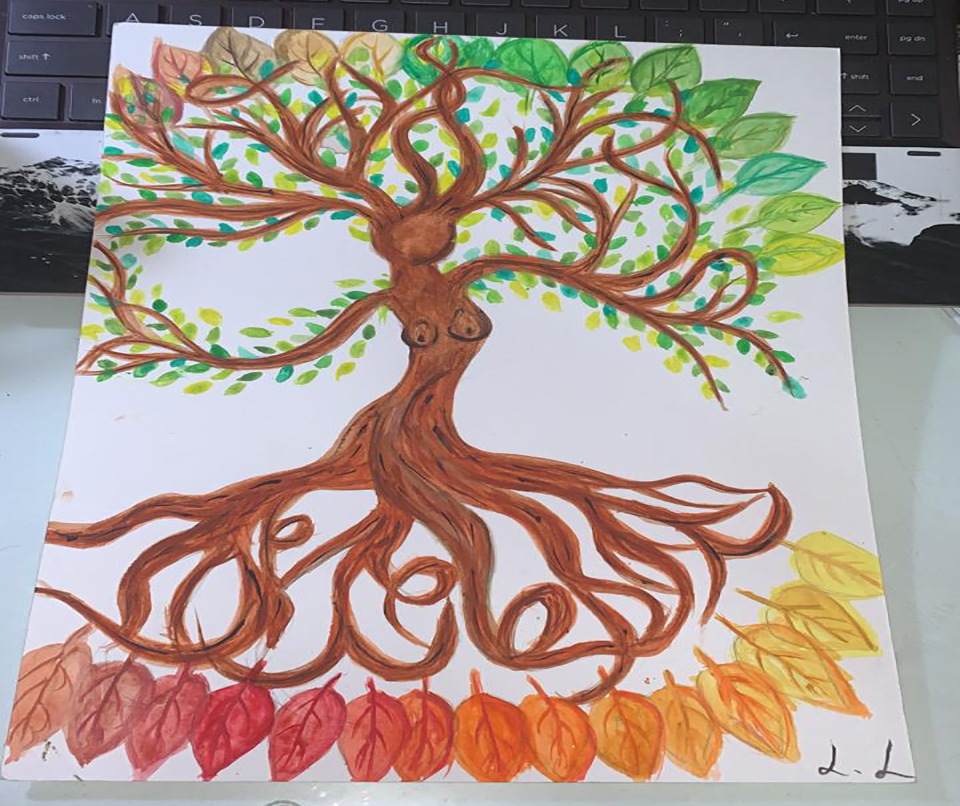
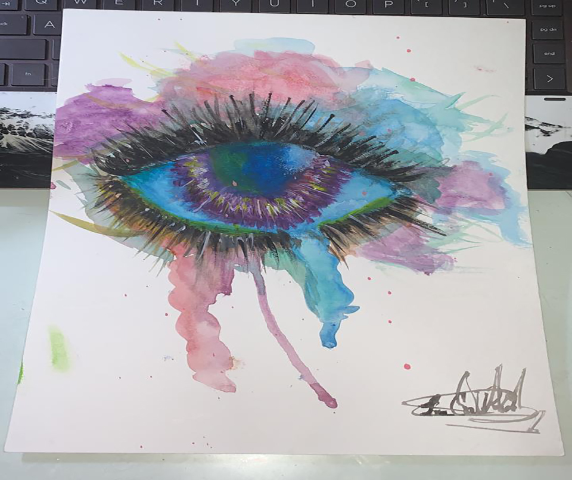
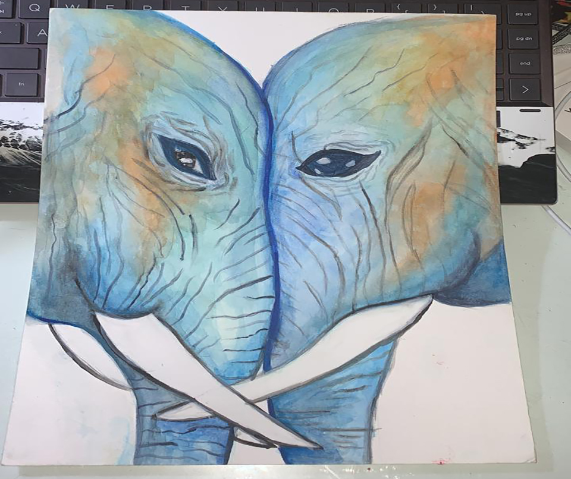
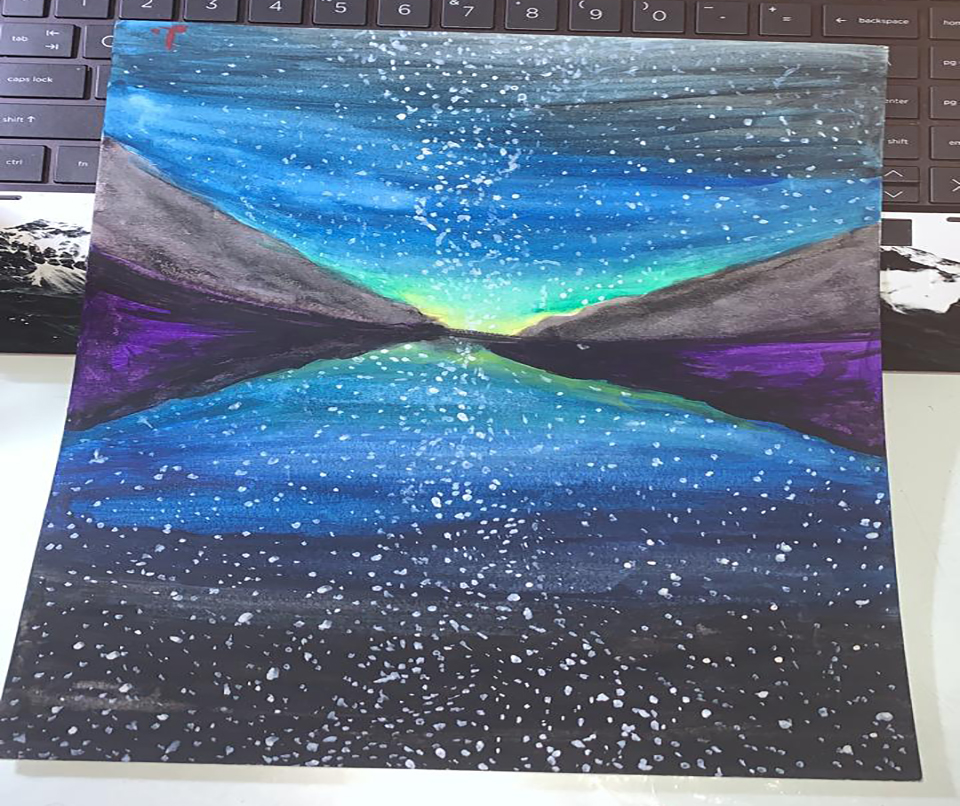
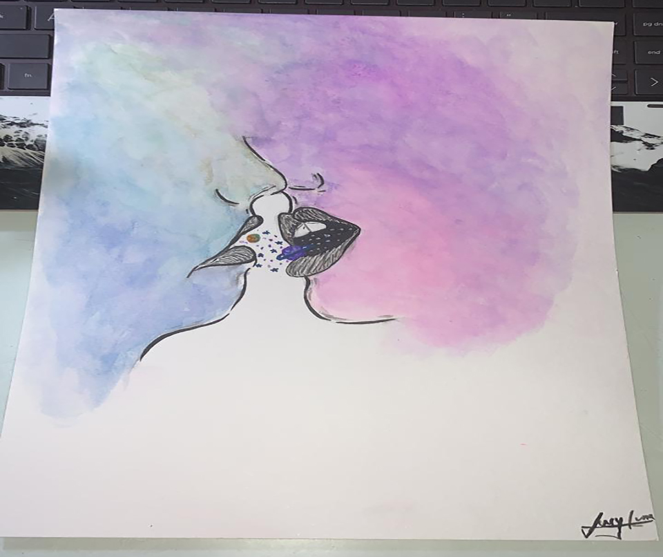

Art Description: Colorful lion looking at the innocence of a butterfly
Art Description: Colorful butterfly relaxing on the field
Art Description: Fall tree, letting go of its leaves for a new beginning
Art Description: Mother earth. Roots connecting to all of its children of all colors and shapes
Art Description: The eye that sees it all through a colorful lense
Art Description: Never ending love. They never forget where it all started and everything they went through
Art Description: Peace. A place of reflection and meditation
Art Description: Stranger love. Transfer of experiences and connection